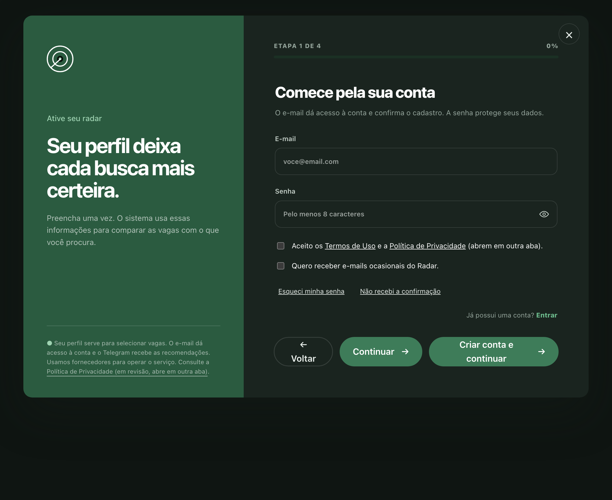

Um agente que garimpa vagas de estágio todos os dias, compara cada anúncio com o perfil do estudante e entrega no Telegram até sete recomendações explicadas — só quando há vagas compatíveis.
Igor Costa
Pipeline, matching e banco
Ian Dias
Operação, coleta e entrega
Miguel Esteves
Cadastro, dados e privacidade
Em produção desde 28/08/202631 dias de entregas diárias410 recomendações enviadas
02 · ProblemaEspecífico e mensurável
Para achar 7 vagas que servem, alguém precisa descartar 726.
Coletadas hoje733anúncios de estágio, execução das 07:23
Sobraram para um perfil35depois de curso, cidade e modalidade
Entregues7as únicas acima da nota mínima
Esse funil existe todo dia, com ou sem o Radar. Sem ele, é o estudante que abre os portais, lê requisitos repetidos e descarta à mão — e ainda perde a vaga que fechou antes de ele chegar.
O tamanho do mercado
20,1 milhões de estudantes aptos a estagiar no Brasil; 1,2 milhão conseguem — cerca de 6%. Entre 40% e 60% dos estagiários são efetivados.
ABRES — Associação Brasileira de Estágios, dados de 2024
03 · Contexto e públicoQuem usa e como é hoje
Universitário no primeiro estágio.
Quem
Estudante de graduação, qualquer curso do catálogo de 12 áreas, 45 subáreas e 105 cursos
Busca o primeiro estágio, sem tempo de triar anúncio todo dia
Já usa Telegram — nenhum aplicativo novo para instalar
O processo atual dele
Abrir vários portais e repetir a mesma busca
Ler requisitos para descobrir se o curso é aceito
Reencontrar a mesma vaga republicada com outro título
Descobrir tarde a vaga que combinava
Piloto em números, últimos 30 dias
Visitas103identidades distintas na landing
Perfis criados64 vincularam o Telegram
Ativados4receberam a primeira recomendação
04 · SoluçãoO que faz, com o quê, e onde entra a IA
A IA lê o anúncio. O Python decide a nota.
O estudante preenche o perfil uma vez. Todo dia às 07:23 o sistema coleta, descarta o que não serve, pede à IA apenas os fatos do anúncio e calcula a compatibilidade por regras determinísticas em Python.
Separar as duas coisas é o que torna o custo viável e a nota auditável: a mesma extração serve todos os usuários, e a mesma vaga com o mesmo perfil dá sempre a mesma nota.
Coleta e filtro
API da Adzuna, deduplicação e pré-filtro por curso, cidade e modalidade — tudo em Python, sem IA.
Extração por IA
Gemini 3.6 Flash devolve requisitos, cursos aceitos, período e modalidade em JSON validado.
A mensagem diária — nota, requisitos atendidos, o que conferir e o selo da fonte

Cadastro em quatro etapas — o perfil vem antes da conta
O que a tela não mostra
Cada vaga carrega a atribuição “Jobs by Adzuna”, exigida pelos termos da fonte, e o link passa por uma função própria que registra a abertura antes de redirecionar.
06 · FluxoNúmeros reais da execução de 28/09
Entrada → Processamento → IA → Resultado → Decisão
EntradaColetaAdzuna, por termo e cidade de cada perfil733 vagas · 16 requisições
ProcessamentoDedupe e pré-filtroRepublicações, área do curso, cidade, nível35 candidatas por perfil
IAExtração de fatosUm lote por chamada, cache compartilhado entre usuários4 requisições ao Gemini
ResultadoNota e rankingRegras em Python, recalculadas a cada execução23 vagas para 4 pessoas
DecisãoTelegramA pessoa abre, se candidata na fonte e responde7 botões de feedback
Do cadastro à 1ª lista1,7 minmediana observada, 4 casos
Extrações reaproveitadas1.670uma por vaga, servem todos os perfis
Custo por lote de 10 vagasR$ 0,066medido em 11/09, raciocínio baixo
07 · Casos reaisQuem já fez algo parecido
A indústria automatizou a triagem.
Empresa
Problema
Tecnologia
Resultados
Unilever Global, RH
250 mil candidaturas por ciclo para 800 vagas; triagem levava até 4 meses
HireVue (análise de entrevista em vídeo) e Pymetrics (jogos cognitivos)
−90% no tempo de contratação (4 meses → 4 semanas), 50 mil horas de entrevista economizadas, £1 mi/ano, +16% em diversidade
Gupy Brasil, ATS com IA
Volume de currículos por vaga inviabiliza triagem manual
NLP na ordenação e recomendação de candidatos, em 2.300 empresas clientes (2021)
480 mil vagas preenchidas em 2021 e redução de até 80% no tempo de contratação, com 22,5 milhões de candidatos na base
LinkedIn Referência técnica
Casar 50 milhões de vagas com cada usuário em tempo real
Funil de quatro estágios: recuperação, calibração, modelo de engajamento e reordenação com regras de negócio
Lição registrada pela própria engenharia: otimizar por clique premia título sensacionalista e gera candidatura frustrada
O que se parece
Mesma mecânica: extrair requisitos de texto livre, comparar com um perfil e ordenar. Como no LinkedIn, a decisão final fica com regras explícitas, não com o modelo.
O que muda
Esses sistemas filtram pessoas para a empresa. O Radar inverte o lado: filtra vagas para o estudante, e por isso nunca descarta alguém — no máximo deixa de recomendar uma vaga.
Fontes: Google for Startups, história da Gupy; LinkedIn Engineering Blog. Os números da Unilever são os reportados em estudos de caso do setor sobre a adoção de HireVue e Pymetrics.
08 · Proposta de valorO que o processo ganha
O trabalho repetitivo sai do estudante.
Etapa do processo
Sem o Radar
Com o Radar
Procurar
Abrir portais e repetir a busca todo dia
Uma execução diária às 07:23, sem ação do estudante
Triar
Ler anúncio por anúncio para ver se o curso é aceito
733 anúncios viram 7, com curso, período e cidade já conferidos
Entender
Deduzir dos requisitos se vale a pena
Nota de 0 a 100 com requisitos atendidos e o que falta conferir
Repetir
Reencontrar a mesma vaga republicada
Deduplicação e histórico por pessoa impedem o reenvio
Tempo até a primeira lista1,7 mindo cadastro à mensagem no Telegram
Custo marginal por usuário novo≈ R$ 0a extração é por vaga, não por pessoa
Cobertura do catálogo12 áreas105 cursos reconhecidos, não só computação
09 · Riscos, limites e dadosO que ainda não está provado
O motor funciona. Falta a prova de valor.
Riscos e limitações
Zero vaga marcada como útil em 410 entregas: 12 aberturas e 6 respostas. Sem esse sinal, não dá para recalibrar a nota.
Uma fonte só. A Adzuna responde por tudo; Gupy saiu pelos termos de uso e Jooble tem limite de 500 requisições.
Custo cresce com cidades e áreas, não com usuários — mas cresce.
Cobrar do estudante esbarra na Lei 11.788/2008, art. 5º, §2º: o pagador precisa ser outro.
Dados: origem, formato e privacidade
Origem: API oficial da Adzuna, com atribuição obrigatória em cada anúncio exibido.
Formato: JSON das vagas e JSON validado por schema na saída da IA; perfis e histórico em PostgreSQL.
Privacidade: RLS por usuário, exportação e exclusão com 60 dias de arrependimento; a pergunta sobre deficiência é opcional e não entra em log, evento nem prompt.
O perfil nunca vai para a IA: o prompt só contém o anúncio.
2.020 testes automatizados30 migrations versionadasDomínio próprio pendenteCAPTCHA desligadoSem validação por estudantes
10 · Próximos passosOnde estamos e o que falta
Protótipo → MVP → Piloto → Implantação
Agosto
Protótipo
Coleta da Adzuna e nota em Python, com perfil fixo e sem banco.
28/08
MVP
Banco, conta no site, vínculo com o Telegram e entrega diária automática.
Agora
Piloto
6 perfis, 4 ativados, 410 recomendações. Falta o sinal de utilidade.
A seguir
Implantação
Domínio próprio, CAPTCHA, textos legais aprovados e um pagador definido.
As três próximas decisões
Conversar com quem recebeu as vagas: por que abriu 12 e não respondeu nada?
Fechar o ciclo de feedback antes de mexer em qualquer peso da nota.
Testar instituição de ensino ou empresa como pagador, já que o estudante não pode ser.
A pergunta honesta: isso vira negócio?
Tecnicamente, já roda sozinho há 31 dias. Como produto, ainda falta a prova de que a recomendação serve — e é isso, não mais código, que decide o próximo passo.